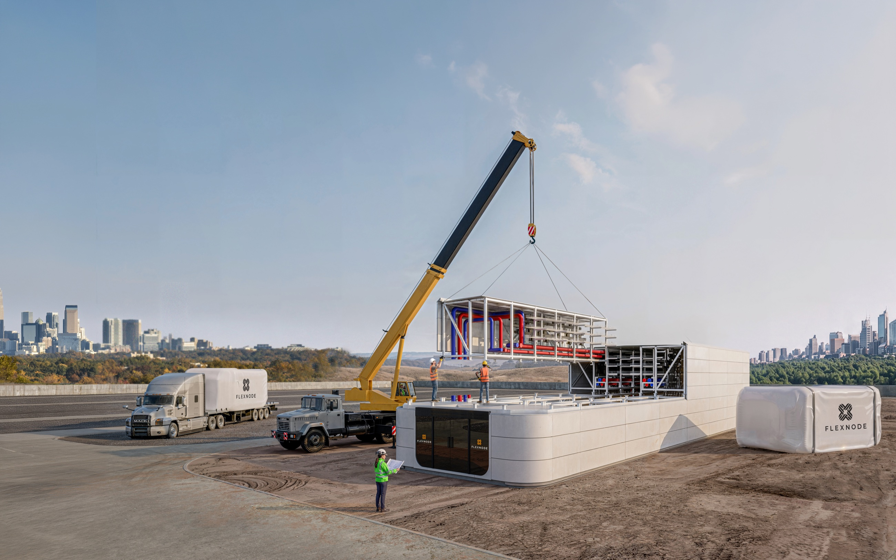
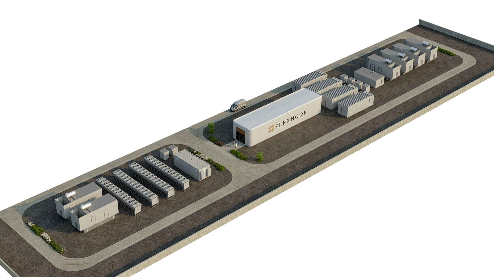
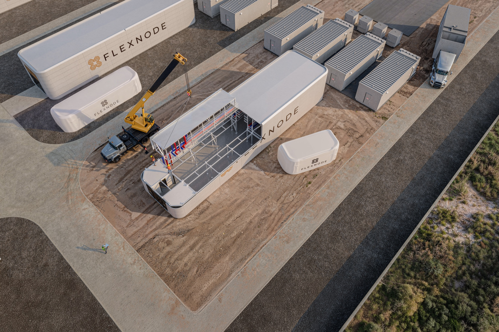
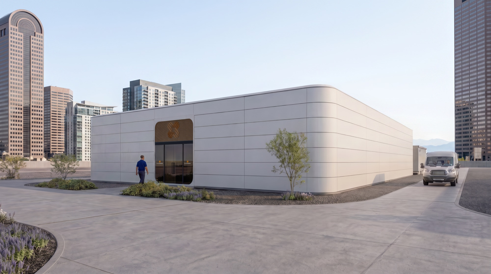
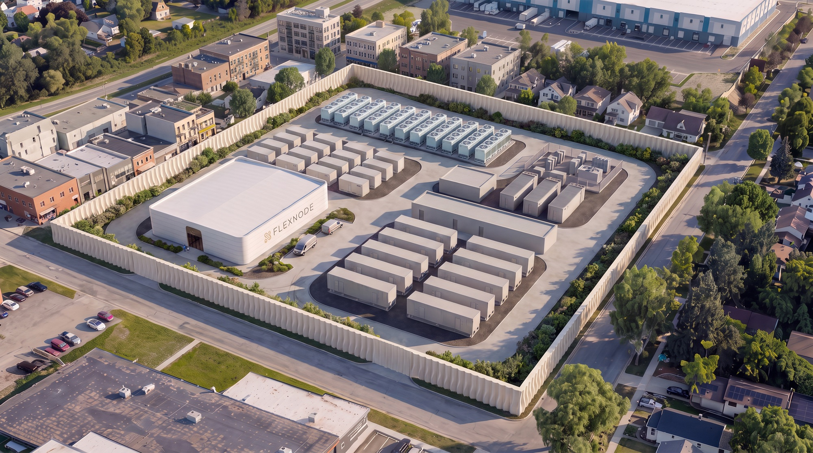

Industrialized AI Infrastructure
AI data center buildings, operational in as little as eight months.*
Configure the building to the power you already have. Factory and site work advance together, so the schedule is measured in months.
*Qualified, site-ready 5–10 MW projects. The clock starts at binding commitment and mobilization funding and ends at commissioned operation.

[ Illustrative NX-1 installation ]Start where you are
You have a workload, a date and a budget. We find the power, configure the building and deliver the capacity.
Build a configuration Route B I have power or a site.You control an energized parcel, a substation or an industrial asset. We assess what fits and what it becomes.
Assess a siteSite and factory work move at the same time.
Conventional delivery is a relay. Design finishes, then procurement, then construction, then fit-out. Each handoff adds float that nobody owns.
NX is configured, not redesigned. The building is in fabrication while the site is still being prepared, and the two meet at commissioning.
Approximately six months to first module on site. Approximately eight months to commissioned operational capacity, measured from binding term sheet and mobilization funding.
[ Delivery basis · a working schedule for review, not a completed NX case study ]
One building system. Four configurations.
The same structural grid, the same interfaces, the same documentation set. Width and equipment yard change. Nothing is bespoke, and nothing is a container.
Compare all four 4.5MW IT
A single building. Metro edge, campus infill and first-phase deployments.
Configure
NX-2
9.0MW IT
Paired buildings on one yard. The common answer to a 10 MW service.
Configure
NX-3
13.5MW IT
Three-building block. Phased against a utility upgrade or a contracted ramp.
Configure
NX-4
18.0MW IT
Campus scale. Four buildings, shared yards, room to extend.
Configure
4.5MW IT
A single building. Metro edge, campus infill and first-phase deployments.
Configure
NX-2
9.0MW IT
Paired buildings on one yard. The common answer to a 10 MW service.
Configure
NX-3
13.5MW IT
Three-building block. Phased against a utility upgrade or a contracted ramp.
Configure
NX-4
18.0MW IT
Campus scale. Four buildings, shared yards, room to extend.
Configure
[ Indicative · final capacity depends on site, equipment, redundancy and scope ]
Configurator
Build the deployment before you brief anyone.
Six decisions. Power, capacity, workload, layout, redundancy and date. You leave with a configuration code, an indicative footprint and a readiness score against the eight-month path.

[ Live site plan · redraws as you configure ]A permanent building, industrialized for speed.
NX carries the structure, envelope, fire and life safety, and service life expected of a building. The subassemblies that fill it are produced in a factory, tested before they ship, and bolted together on site.
- Permanent enclosureStructural frame and rated envelope engineered to the local code, not a welded appliance dropped on a pad.
- Integrated high-density systemsLiquid-cooling readiness, high rack density planning, and power distribution designed as one facility rather than assembled on site.
- Configured for site and equipmentClimate response, redundancy, facade and phasing change. The interfaces, documentation and commissioning logic do not.


Built by people who have delivered at scale.
An eight-month schedule is a claim about execution, not about design. The people making it have run embassy programs, a million square feet a month, and one of the most constrained transit projects in New York.
Meet the leadership teamDirector of Applied R&D at Alpha Corporation.
Complex programs where controlled subassemblies had to adapt to local conditions and security requirements. Three-time technology founder.
At Flexnode · platform vision, strategy and capital
Global VP at WeWork. Licensed architect, MIT M.Arch.
Led 240 professionals across 10 countries and $420 million of design-build. Previously led Snøhetta’s San Francisco office.
At Flexnode · operating model and delivery organization
21 years at Arup. Project Director, Fulton Center.
Licensed PE and Adjunct Professor at Columbia GSAPP. Portfolio includes Mexico City International Airport and China Resources Tower.
At Flexnode · growth, product-market fit and ecosystem
Prior work is attributed to the former employer. It is evidence of capability, not a Flexnode project record.
One plan across site, factory and commissioning.
Flexnode holds the interfaces. Equipment and manufacturing partners are qualified against the configuration, so a constrained supply line changes the source without changing the schedule or the document set.
- Repeatable by design
- Controlled configurationsLess redesign, less rework
- Flexible where supply matters
- Qualified alternatesPreserves the project path
- Accountable at the interfaces
- One scope and scheduleNamed owner per gate

Built for the place where it operates.
Power, water, sound, traffic, land use and visual character are design inputs from the first week. A project that cannot be approved is not a fast project.
Community and adaptability
Cooling, power and operating conditions.

Architecture, landscape and service access.

Land use, traffic and public process.
Available Power Is Not Operational Capacity
A quoted megawatt figure and a commissioned critical IT load are separated by utility status, site readiness, long-lead equipment, fiber and acceptance testing. Here is the gap, itemised.
ReadThe Facility Is the Server
Past roughly 40 kW a rack, thermal design, structure, power topology and code compliance stop being separate disciplines and become one specification.
ReadSocial License Is a Design Input
Water, sound, grid impact, traffic and appearance decide approvals. Treating them as a communications exercise after design is how schedules die.
ReadWhat could be operational in eight months?
Tell us the capacity, the place and the date. You get back a preliminary fit summary: likely configuration, readiness gaps, scope assumptions and the next information we need.
- 01 · Indicative fit
- Configuration & footprint
- 02 · Delivery basis
- Schedule range & gaps
- 03 · Commercial next step
- Named owner & date